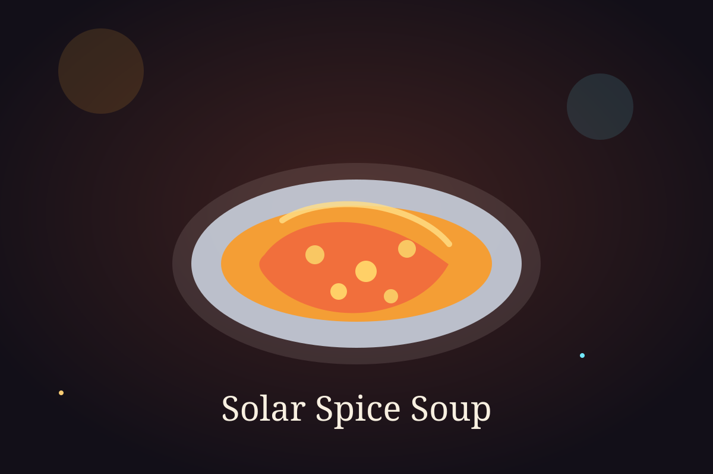

Time Module

Ingredient Vault
Ingredients
- 1 tablespoon olive oil
- 1 onion, chopped
- 2 carrots, sliced
- 2 tomatoes, chopped
- 1/2 cup red lentils
- 3 cups vegetable stock
- 1/2 teaspoon turmeric
- 1/2 teaspoon cumin powder
- Salt and black pepper to taste
Cooking Sequence
Step-by-step instructions
- Heat olive oil in a pot and cook the onion until soft.
- Add carrots and tomatoes, then stir for a few minutes.
- Mix in the lentils, turmeric, cumin, salt, and pepper.
- Pour in the vegetable stock and bring the soup to a boil.
- Lower the heat and cook until the carrots and lentils are fully tender.
- Blend the soup carefully until smooth or leave it slightly textured.
- Serve hot with bread or a light garnish on top.